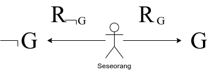

1. Pendahuluan
Pengendalian diri (self-control) adalah salah satu kemampuan yang terpenting yang ada pada manusia. Dengan pengendalian diri inilah yang membedakan manusia dengan hewan. Jika pengendalian diri tidak ditemukan pada diri seseorang, maka dirinya hanya akan dikuasai oleh nafsunya, dan yang demikian hanya akan membuatnya tidak lebih dibandingkan hewan. Bahkan, jika bisa lebih, maka bisa lebih hina lagi. Namun, jika seseorang tidak memiliki nafsu terhadap apa saja, maka yang demikianlah yang disebut sebagai mati sebelum ajalnya. Dengan demikian, yang bijak adalah meletakkan nafsu sesuai pada waktu dan tempatnya, dan yang demikian hanya bisa dicapai dengan pengendalian diri.
Esai yang ditulis oleh William Goerge Jordan (W. G. Jordan) dengan judul “The Kingship of Self -Control” pertama kali terbit pada tahun 1899 (Jordan, 2011). Meskipun esai ini terbit pertama kali di abad yang lalu, isi dan kajian esai masih relevan dan dapat diterapkan di masa sekarang. Dengan mengingat di abad ini kita mengalami yang namanya “ledakan informasi”, dan banyaknya gangguan membuat kemampuan pengendalian diri merupakan kemampuan yang begitu terapan dan besar manfaatnya. Abad yang mana peredaran informasi begitu cepat melalui internet, membuat siapa saja bisa menulis apa saja dengan topik apa saja, atau dikenal dengan slogan berupa singkatan AAA, yang kepanjangannya adalah Anyone can write Anything about Any topic (Allemang, Hendler, and Gandon, 2020). Terlebih lagi, konten yang beredar sekarang lebih beragam dengan bentuk yang beragam pula. Dari sekian banyaknya bentuk informasi yang beredar saat ini, banyak yang berbentuk video. Hal ini bisa membuat seseorang menghabiskan kebanyakan waktu yang ia punya tanpa terasa hanya dengan menonton video-video yang beredar di internet. Tanpa ada pengendalian diri, seseorang tidak akan bisa lepas dari sosial media yang sifatnya candu.
2. Materi
Tentu saja materi pokok mengenai hukum klasik dan gambaran logika esai W. G. Jordan ini adalah esai “The Kingship of Self-Control” itu sendiri. Karena, kalau tidak (belum) membaca esainya, maka bagaimana mungkin untuk bisa “memantikkan” gambaran logika yang dapat merangkum esainya. Maka dari itu, membaca dan mempelajari esai dengan serius adalah satu hal terpenting dalam menemukan hukum klasik dan gambaran logika.
Adapun yang dimaksud dengan membaca dan mempelajari esai dengan serius adalah, membaca dengan metode yang pernah dilakukan (digunakan) oleh almarhum Syekh Ahmad Deedat. Yaitu, ketika membaca tulisan, seperti buku, majalah, koran, artikel, dll., jika pembaca menemukan kajian yang pembaca anggap menarik dan ingin merujuk serta membacanya berulang-ulang, maka pembaca sebaiknya menggarisbawahi, mencatat garis besar, dan halamannya. Dengan menggunakan metode membaca seperti ini, ketika pembaca ingin merujuk pembahasan yang sudah digaris bawahi, maka pembaca tidak perlu bersusah-susah untuk mencarinya dengan menulusuri buku halaman demi halaman. Dan, sebaiknya pembaca memahami dan menghapal apa yang sudah pembaca menggarisbawahinya. Karena, “Hapal kaji karena diulang”. Dan perlu diingat, bahwa menghapal merupakan salah satu metode belajar serius (Zarman, 2012).
Selain esai, materi yang membuat kami menemukan gambaran logika yang merangkum esai adalah esainya Ludwig Wittgenstein dengan judul “Tractatus Logico-Philosophicus” atau biasanya disingkat dengan Tractatus (Wittgenstein, 2001) proposisi nomor 3, yaitu
\(^3\)A logical picture of facts is a thought
yang artinya, “\(^3\)Suatu gambaran logikanya fakta adalah suatu pikiran.” Terdapat 2 nilai (pelajaran) utama yang bisa diambil dari esai Tractatus ini. Pertama, apa yang dapat dipikirkan dapat diutarakan, baik dengan tulisan atau lisan, bahkan peragaan. Kedua, apa yang dapat dipikirkan adalah terbatas, dan kita tidak dapat memikirkan diluar batas pemikiran. Dan apa yang di luar batas pemikiran sederhananya adalah suatu hal yang tidak-tidak. Dengan demikian, jika seseorang mencoba untuk berpikir di luar batas pemikiran, maka sederhananya dia sedang berpikir yang tidak-tidak.
Salah satu proposisi dari Tractatus yang penting adalah proposisi nomor 4 berikut
\(^4\)A thought is a proposition with a sense.
artinya, “Suatu pikiran adalah suatu proposisi yang bernalar.” Hanya dengan menggunakan (memahami) 2 proposisi ini saja sudah cukup untuk memantik gambaran logika (logical pictures) yang dapat merangkum esai “The Kingship of Self-Control”.
Hal ini dapat dicapai dikarenakan, apa yang tertulis di esai “The Kingship of Self-Control” (Jordan, 2011) ini terdapat proposisi-proposisi yang masuk akal. Yang mana, berdasarkan esainya Tractatus (Wittgenstein, 2001), proposisi-proposisi yang masuk akal ini adalah suatu pikiran, dan pikiran adalah suatu gambaran logika. Dengan demikian, proposisi-proposisi yang terdapat di esai adalah suatu gambaran logika. Dikarenakan rangkuman esai berisikan proposisi-proposisi juga, maka terdapat gambaran logika yang dapat merangkum suatu esai.
3. Ikhtisar
Buku yang ada di tangan pembaca adalah buku terjemahan esai “The Kingship of Self-Control”, diterjemahkan oleh Savitri, I. D. (Jordan, 2011). Buku ini terdiri dari 9 topik pembahasan. Masing-masing topik dibuka dengan pemaparan masalah dan apa yang mesti seseorang kendalikan yang berkaitan dengan masalah yang dihadapi. Adapun tujuan dari semua bentuk pengendalian-diri adalah mencapai kesuksesan. Di dalam buku ini juga menyinggung beberapa kisah nyata dan beberapa kisah yang hanya bertujuan sebagai ilustrasi saja. Buku ini memiliki ketebalan sebesar \(95 + 9 = 104\) halaman, membuat pembaca membutuhkan kurang lebih 1 jam 30 menit untuk menamatkan (membacanya) sampai habis. Pembaca sendiri sudah membacanya sebanyak 4 kali di saat penulisan tulisan ini. Dengan pengendalian diri adalah topik utama esai, membuat buku ini merupakan buku yang bagus untuk pengembangan diri serta peringatan bagi diri sendiri.
Berikut daftar kajian buku yang pembaca menggarisbawahinya.
\(\ast\space^1\)Relasinya dengan QS. Hlm. 1-2.
\(\ast\space^2\)Latihan disiplin “gimnastik moral” yang bisa dilakukan. Hlm. 8-9.
\(\ast\space^3\)Tidak ada manusia yang tidak tersentuh oleh kebencian yang sumbernya dari rasa iri. Hlm. 12-13.
\(\ast\space^4\)Hukuman bagi setiap individu yang mengabarkan suatu skandal. Hlm. 17.
\(\ast\space^5\)Bagi lidah penggosip. Hlm. 17.
\(\ast\space^6\)Rintangan/cobaan yang harus siap diterima bagi seseorang yang lebih sukses dibandingkan teman-temannya. Hlm. 17.
\(\ast\space^7\)Jika hanya mengerjakan kewajiban, maka seseorang tidak akan memperoleh sukses yang akan dikenang sepanjang masa. Hlm. 23.
\(\ast\space^8\)Dunia dimana agnostik itu indah. Hlm. 35.
\(\ast\space^9\)Bentuk tertinggi dari derma. Hlm. 35.
\(\ast\space^{10}\)Salah satu cara untuk mengendalikan/menjaga perkataan. Hlm. 37.
\(\ast\space^{11}\)Kekhawatiran adalah racun mental; kerja adalah asupan mental. Hlm. 39.
\(\ast\space^{12}\)Malam hari seharusnya diisi dengan tidur. Hlm. 40.
\(\ast\space^{13}\)Asosiasi kekhawatiran. Hlm. 42.
\(\ast\space^{14}\)Kekhawatiran melumpuhkan pikiran juga tindakan. Hlm. 45.
\(\ast\space^{15}\)Hal yang diperlukan untuk menyembuhkan kekhawatiran. Hlm. 48.
\(\ast\space^{16}\)Kesederhanaan dalam hal moral. Hlm. 49.
\(\ast\space^{17}\)Jalan agung untuk menuju kesederhanaan. Hlm. 52.
\(\ast\space^{18}\)Penyebab hampir semua ketidakpuasan. Hlm. 52.
\(\ast\space^{19}\)Menyingkirkan kekhawatiran dan kesedihan. Hlm. 56.
\(\ast\space^{20}\)Menyadari suatu kebenaran adalah dengan menjalaninya. Melihat suatu kewajiban adalah mulai melakukannya. Hlm. 57.
\(\ast\space^{21}\)Hidup tanpa penyesalan adalah hidup tanpa pencapaian. Hlm. 63.
\(\ast\space^{22}\)Penyesalan harus \(\ldots\) .
\(\ast\space^{23}\)Kesuksesan adalah hukum sederhana \(\ldots\) .
\(\ast\space^{24}\)Kita tidak berhak membuat orang lain menjadi korban suasana hati kita. Hlm. 77.
\(\ast\space^{25}\)Melakukan terbaik yang kita bisa. Hlm. 92.
\(\ast\space^{26}\)Dalam diri kita terdapat kekuatan dan kemungkinan tak terbatas dan belum terasah. Hlm. 95.
Sesuai dengan judulnya, yaitu “The Kingship of Self-Control”, setiap topiknya membahas apa yang mesti kita kendalikan. Pada pembahasan ke-1, pembahasan ini dibuka dengan pembahasan bahwa manusia memiliki 2 pencipta, yaitu Tuhan dan dirinya sendiri. Pada pembahasan ini, kita dapat memulai pengendalian diri dengan melakukan kegiatan “Gimnastik moral”, contohnya bangun di pagi hari tanpa kembali ke tempat tidur, menutup bacaan novel (kalau relevannya dengan zaman sekarang, matikan smartphone, social media), berjalan kaki, dll. Dan seseorang mesti mempelajari mengenai kelemahan dirinya sendiri, dan apa yang menghalanginya dari kesuksesan. Setelah itu, ia harus mengendalikan dirinya untuk mengeliminasi kelemahannya. Contohnya, kemalasan, kesombongan, kekhawatiran, dll.
Untuk pembahasan ke-2, seseorang mesti mengendalikan lidahnya, dalam arti ia mesti menjaga perkataan untuk tidak menggosip, menghina, dan melukai reputasi seseorang. Pada pembahasan ke-3, semestinya seseorang mampu untuk mengendalikan diri untuk mengerjakan sesuatu bukan hanya sekedar kewajiban, tetapi kecintaan. Contoh yang begitu kontras mengenai kewajiban dan kecintaan adalah seorang perawat dan seorang ibu yang merawat serta menunggu (menemani) anakanya di rumah sakit. Pada pembahasan ke-4 seseorang harus mampu mengendalikan diri untuk tidak senantiasa menghakimi orang. Pada pembahasan ke-5, seseorang harus mampu mengedalikan dirinya untuk tidak mengkhawatirkan hal yang sebenarnya tidak perlu dikhawatirkannya. Karena, kekahawatiran hanya akan melumpuhkan pemikiran dan tindakan seseorang. Pada pembahasan ke-6, seseorang harus mampu mengendalikan dirinya untuk kesederhanaan. Hal yang diperlukan untuk memulai kesederhanaan adalah “menyederhanakan”. Sederhana disini dalam arti, meyakini atas suatu kebenaran adalah dengan menjalaninya; melihat suatu kewajiban adalah dengan melakukannya. Pada pembahasan ke-7, seseorang harus mampu mengendalikan dirinya untuk melangkah maju dari penyesalan-penyesalan, serta mengambil pelajaran daripadanya, dan memulai hidup yang baru. Pada pembahasan ke-8, seseorang harus mampu mengendalikan dirinya untuk tidak terbiasa menyebarkan penderitaanya ke orang lain. Pada pembahasan ke-9, seseorang harus mampu mengendalikan dirinya untuk memahami/menyadari kekuatan dan kemungkinan tak terbatas dan belum terasah. Dan pada akhirnya, seseorang harus mampu mengendalikan dirinya untuk melakukan yang terbaik yang ia bisa.
4. Hukum Klasik Kesuksesan
Dari segmen ikhtisar, suatu gambaran logika terpantik pada pikiran kami, adapaun gambaran logikanya adalah berikut.

Simbol yang kedua adalah \(G\), ini adalah simbol untuk himpunan tujuan seseorang. Simbol yang ketiga adalah simbol negasi (\(\neg\)). Jika \(G\) adalah himpunan tujuan seseorang, maka \(\neg G\) adalah simbol untuk himpunan bukan tujuan seseorang. Simbol yang keempat adalah simbol penghubung, yaitu berupa anak panah (\(\rightarrow\)). Dan simbol yang terakhir adalah simbol relasi \(R_G\), yang didefinisikan sebagai segala sesuatu yang berkaitan dengan tujuan seseorang, dan apa-apa yang menghantarkan seseorang ke tujuannya. Relasi \(R_{\neg G}\) adalah relasi yang didefinisikan sebagai segala sesuatu yang berkaitan dengan yang bukan tujuan seseorang, dan apa-apa yang menghantarkan seseorang ke yang bukan tujuannya.
Itulah simbol-simbol yang ada pada gambaran logika esai “The Kingship of Self-Control” karyanya W. G. Jordan ini. Gambaran logika ini terpantik ketika kami membaca esainya dan ikhtisar secara berulang-ulang. Terdapat bagian esai yang begitu kami suka, yaitu ikhtisar no. 20 & 23, yang kami tulis ulang sebagai berikut
\(\ldots^{20}\)menyadari suatu kebenaran adalah mulai menjalaninya, melihat suatu kewajiban adalah mulai melakukannya.
dan
\(\ldots^{23}\)kesuksesan adalah hukum sederhana \(\ldots\) yang berkaitan dengan perkembangan mental yang esensial, energi dan konsentrasi yang tidak kenal lelah, dan pengorbanan terus-menerus.
Yang sukses itu adalah seseorang. Kata ‘berkaitan’ sinonim dengan ‘relasi’. Dan ‘perkembangan mental yang esensial, energi, dan konsentrasi yang tidak kenal lelah, dan pengorbanan terus-menerus.’ adalah hal-hal yang berkaitan dengan menghantarkan seseorang ke tujuannya. Jika seseorang berhasil mencapai/memperoleh tujuannya, maka ia dikatakan sebagai orang yang sukses. Maka dari itu, simbol yang terpantik adalah simbol seseorang, relasi \(R\), himpunan tujuannya \(G\), penghubung yang berupa anak panah (\(\rightarrow\)), dan simbol negasi (\(\neg\)) sebagai pelengkap.
Pada ikhtisar no. 23 disebutkan bahwa, kesuksesan adalah hukum sederhana. Di dalam sains, kata ‘hukum’ biasanya diidentik dengan penjeleasan bagaimana fenomena alam ini bekerja. Contohnya, hukum I Newton menjelaskan suatu benda yang diam akan tetap diam, kecuali ada gaya luar yang membuat benda yang tadinya diam menjadi tidak diam. Maka, hukum klasik (sederhana) yang mengenai kesuksesan adalah suatu penjelasan bagaimana kesuksesan itu. Berbeda dengan teori, teori berisikan suatu penjelasan mengapa dan bagaimana fenomena alam ini bekerja.
Maka dari itu, kami mengajukan hukum klasik kesuksesan berdasarkan esai “The Kingship of Self-Control” sebagai berikut. Bahwa,
\(\ast\textit{1}.\space\)Sukses hanya bagi seseorang yang memiliki tujuan.
\(\ast\textit{2}.\space\)Ketika seseorang sudah mencapai tujuannya, maka dikatakanlah bahwa dia adalah seseorang yang sukses.
\(\ast\textit{3}.\space\)Untuk mencapai tujuannya, seseorang harus mengetahui apa-apa saja yang berkaitan dengan tujuannya dan apa-apa saja yang dapat menghantarkan seseorang ke tujuannya.
\(\ast\textit{4}.\space\)Untuk mencapai tujuannya, seseorang juga harus mengendalikan dirinya (pengendalian diri, self-control) untuk menghantarkan dirinya sendiri ke tujuannya.
\(\ast\textit{5}.\space\)Pengendalian diri membutuhkan perkembangan mental yang esensial, energi dan konsentrasi yang tidak kenal lelah, dedikasi, dan pengorbanan secara kontinu.
\(\ast\textit{6}.\space\)Dikarenakan semua orang terikat dengan waktu. Maka, setiap saat seseorang diberikan pilihan, apakah ia akan memilih menghantarkan dirinya sendiri semakin dekat dengan tujuannya, atau sebaliknya.
\(\ast\textit{7}.\space\)Dengan demikian, seseorang semestinya memanfaatkan waktu untuk mengendalikan dirinya melakukan yang terbaik yang ia bisa.
\(\ast\textit{8}.\space\)Setelah melakukan yang terbaik yang ia bisa, diluar daripada itu, khendaknya ia berdoa dan bertawakal.
Itulah hukum klasik kesuksesan yang kami ajukan. Besar harapan kami, semoga hukum kesuksesan yang kami ajukan bermanfaat dan dapat diterapkan dengan mudah, baik untuk mencapai sesuatu, atau menjelaskan fenomena kesuksesan.
Sebagai contoh, mari kita terapkan hukum kesuksesan ini pada tulisan ini sendiri. Pada proposisi no. 1 sukses hanya bagi seseorang yang memiliki tujuan. Pada tulisan ini, ‘seseorang’ yang dimaksud adalah penulis. Sebagai seorang penulis, ia memiliki tujuan untuk menulis tentang suatu topik, yaitu hukum klasik kesuksesan. Pada proposisi no. 2, seorang penulis dikatakan sudah mencapai tujuannya apabila ia sudah menyelesaikan dan menerbitkan tulisannya. Untuk seorang penulis agar meraih tujuannya, maka ia harus mengetahui hal ihwal yang menghantarkan ketujuannya, bukan hanya sekedar tahu, tetapi juga harus melakukannya (proposisi no. 3 & 4). Maka dari itu, penulis harus berkonsentrasi dan melakukan pengorbanan secara kontinu. Pengorbanan tersebut bisa berupa menunda ‘kenikmatan’ yang sifatnya melalaikan (proposisi no. 5). Setiap saat, penulis harus berusaha mengendalikan dirinya untuk mengisi waktunya untuk menyelesaikan tulisannya (proposisi no. 6 & 7). Terakhir, seorang penulis haruslah berdoa dan bertawakal untuk menerima segala bentuk konsekuensi dari perbuatannya sendiri (proposisi no. 8).
Contoh penerapan hukum kesuksesan untuk mencapai sesuatu adalah penerbit ini sendiri (Fahlevisia Repositori Digital Personal). Tujuan dari penerbit Fahlevisia adalah ikut serta dalam mencerdaskan kehidupan bangasa (proposisi no. 1 & 2). Untuk mencapai tujuannya ini, Fahlevisia mengembangkan e-repository yang berisikan artikel-artikel berbahasa Indonesia yang kualitasnya setara dengan kualitas artikel daring luar negeri pada umumnya. Demi memiliki kemampuan untuk menerbitkan artikel yang demikian, maka penulis artikel harus berusaha memahami ilmu (berilmu; Zarman, 2012), dan memiliki keterampilan pengembangan web (web development) yang cekatan (proposisi no. 3 & 4). Bukan sekedar tahu saja, seorang pengembang (pendiri) Fahlevisia harus mengendalikan dirinya untuk berusaha sebaik-baiknya, dan senantiasa aktif menyebarkan Fahlevisia agar tidak asing bagi publik, terkhususnya orang Indonesia (proposisi no. 5, 6, & 7). Dan pada akhirnya, semestinya seorang pendiri senantiasa berdoa dan bertawakal untuk menerima berbagai konsekuensi atas apa yang telah diusahakannya.
5. Kesimpulan
Pada artikel ini, kami telah mengajukan hukum klasik kesuksesan yang dimaksud pada ikhtisar esai “The Kingship of Self-Control” karyanya W. G. Jordan. Semoga hukum sederhana yang kami ajukan dapat diterapkan dalam menggapai cita-cita atau tujuan, baik itu tujuan yang besar maupun kecil. Kami juga telah menerapkannya pada tulisan ini dan apa yang ingin kami capai melalui situs web ini untuk kedepannya. Bukan hanya hukum klasik kesuksesan, kami juga mengajukan gambaran logika yang berguna untuk memantik hukum kesuksesan kami yang terdiri atas 8 proposisi. Gambaran logika dan hukum yang kami ajukan, kedua-duanya diperoleh dengan membaca esai, dan membuat ikhtisarnya. Yang mana, dengan menghapal dan memahami isi esai, kami juga merangkum apa-apa saja yang mesti dikendalikan pada diri seseorang.
Untuk menutup tulisan ini, berikut proposisi yang berupa rangkuman dari 8 proposisi hukum klasik kesuksesan. Bahwa, kesuksesan hanya diperoleh pada diri seseorang, yang mendedikasikan setiap saat (waktu) untuk mengetahui dan melakukan apa-apa saja yang dapat menghantarkan dirinya semakin dekat dengan apa yang ingin dicapainya.
Referensi
Allemang, D., Hendler, J. and Gandon, F. (2020) Semantic Web for the Working Ontologist: Effective Modeling for Linked Data, RDFS, and OWL (3rd edn.). New York: Association for Computing Machinery. Available at: https://doi.org/10.1145/3382097
Jordan, W. G. (2011) The Kingship of Self-Control. Diterjemahkan dari bahasa Inggris oleh Savitri, I. D. Jakarta: Gramedia Pustaka Utama.
Wittgenstein, L. (2001) Tractatus Logico-Philosophicus (2nd edn.). Translated from the German by Pears, D. F. and McGuinnes, B. F. London: Routledge.
Zarman, W. (2012) Inilah! Wasiat Nabi bagi Para Penuntut Ilmu. Bandung: Ruang Kata.
Kutip Artikel Ini
Fahlevi, M.R. (2024) 'Hukum Klasik Kesuksesan yang Dimaksud Esai "The Kingship of Self-Control" Karyanya W.G. Jordan'. Telusuri: https://www.fahlevisia.com/paper/2024/fsr5/ (Diakses: ).
Fahlevi, M.R. (2024, April 24) Hukum Klasik Kesuksesan yang Dimaksud Esai "The Kingship of Self-Control" Karyanya W.G. Jordan. Fahlevisia. Diterima , dari https://www.fahlevisia.com/paper/2024/fsr5/
Fahlevi, M.R. 'Hukum Klasik Kesuksesan yang Dimaksud Esai "The Kingship of Self-Control" Karyanya W.G. Jordan.' Diakses . https://www.fahlevisia.com/paper/2024/fsr5/
M.R. Fahlevi. 'Hukum Klasik Kesuksesan yang Dimaksud Esai "The Kingship of Self-Control" Karyanya W.G. Jordan.' Fahlevisia, Apr. 24, 2024. Diakses: . [Daring]. Telusuri: https://www.fahlevisia.com/paper/2024/fsr5/
Fahlevi, Muhammad Reza, Hukum Klasik Kesuksesan yang Dimaksud Esai "The Kingship of Self-Control" Karyanya W.G. Jordan (2024) <https://www.fahlevisia.com/paper/2024/fsr5/> [Diakses ]
Muhammad Reza Fahlevi. 'Hukum Klasik Kesuksesan yang Dimaksud Esai "The Kingship of Self-Control" Karyanya W.G. Jordan'. Fahlevisia, 24 April 2024, https://www.fahlevisia.com/paper/2024/fsr5/
Muhammad Reza Fahlevi, 'Hukum Klasik Kesuksesan yang Dimaksud Esai "The Kingship of Self-Control" Karyanya W.G. Jordan' (Fahlevisia, 24 April 2024) <https://www.fahlevisia.com/paper/2024/fsr5/> Diakses .
Fahlevi MR. Hukum Klasik Kesuksesan yang Dimaksud Esai "The Kingship of Self-Control" Karyanya W.G. Jordan [Internet]. 2024 [dikutip pada tanggal ]. Telusuri: https://www.fahlevisia.com/paper/2024/fsr5/